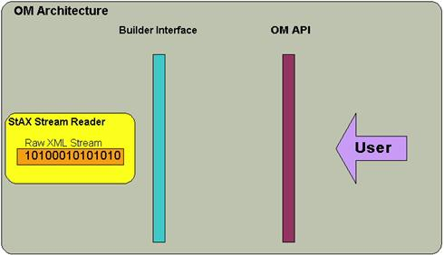

OM stands for Object Model (a.k.a AXIOM - AXis Object Model) and refers to the XML infoset model that is developed for Axis 2. XML infoset refers to the information included inside the XML. For programmatical manipulation it is convenient to have a representation of this XML infoset in a language specific manner. DOM and JDOM are two such XML models. OM is conceptually similar to such an XML model by its external behavior but deep down it is very much different.
The objective of this tutorial is to introduce the basics of OM C and explain best practices while using OM.
AXIOM C is a C implementation of AXIOM Java. We have tried to get almost the same kind of API in C.
This tutorial can be used by anybody who is interested and wants to go deeper in to OM C. Knowledge in similar object models such as DOM will be quite helpful in understanding OM but such knowledge is not assumed. Several links are listed in the appendix/ links section that will help understand the basics of XML.
OM is a lightweight, differed built XML infoset representation based on StAX API derived form (JSR 173), which is the standard streaming pull parser API. OM can be manipulated as flexibly as any other object model (such as JDOM), but underneath the objects will be created only when they are absolutely required. This leads to much less memory intensive programming.
Following is a short feature overview of OM.
Since different XML parsers offer different kinds of pull parser APIs,
we define an API derived from StAX. That API is defined in
axis2_xml_reader.h. Similarly we define an xml writer API in
axis2_xml_writer.h. These two APIs work as an abstarction
layer between any XML parser and OM. So any parser that is going to be
used for OM should implement the axis2_xml_reader API and
axis2_xml_writer API using a wrapper layer.
Currenly we use libxml2 as our default XML parser.

OM Builder wraps the raw xml character stream through the
axis2_xml_reader API. Hence the complexities of the pull event
stream are covered.
In a nutshell SOAP is an information exchange protocol based on XML. SOAP has a defined set of XML elements that should be used in messages. Since Axis is a "SOAP Engine" and OM is built for Axis, a SOAP specific API was implemented on top of OM.We have defined a number of structs to represent SOAP constructs like Envelope etc., which wraps general OM structures. See here to learn more about SOAP.
Before starting the discussion on OM, it is necessary to get a good
understanding of the basics of Axis2/C. Axis2/C is designed to be plugble to
any system written in C or C++ and therefore Axis2 has abstracted the
functionalities that differ from system to system in to a structure
axis2_env_t, which we refer to as axis2 environment . The
environment holds axis2_allocater_t [ used for memory
allocation/deallocation ] , axis2_error_t [ error reporting
mechanism ], axis2_log_t [ logging mechanism ] and
axis2_thread_t [threading mechnism ].
axis2_allocator_t has function pointers to malloc,
realloc and free functions and all memory
allocation and deallocation is done using the allocator. Therefore, by
pluging in a different allocator, a user can make the entire Axis2 system to
use different memory management functions.
When creating the axis2 environment, the first thing is to create the allocator.
axis2_allocator_t *allocator = NULL;
allocator = axis2_allocator_init(NULL);
We parse NULL to the above function to use the default
allocator. Then the allocators function pointers point to
malloc, realloc and free functons. If
you have your own allocator structure, you may pass it instead.
Convinent macros AXIS2_MALLOC, AXIS2_REALLOC and
AXIS2_FREE are defined to use allocator functions (refer to
axis2_allocator.h for more information).
In a similar fashion, you can create the error and log structures.
axis2_log_t *log = NULL;
axis2_error_t *error = NULL;
log = axis2_log_create(allocator, NULL, NULL);
log = axis2_log_create(allocator, NULL, "mylog.log");
Now we can create the environment by parsing the allocator, error and log
to axis2_env_create_with_error_log() function.
axis2_env_t *env = NULL;
env = axis2_env_create_with_error_log(allocator, error,
log);
Apart from the above abstraction , all other library functions used are ANSI C complient. Further, platform dependent funtions are also abstracted.
As a rule of thumb, all "create" functions take a pointer to
the environment as its first argument and all other functions take pointer to
'this' struct as the first argument and a pointer to the environment as the
second argument. (Please refer to our coding convention page to learn more
about this)
Eg.
axiom_node_t *node = NULL;
axiom_node_t *child = NULL;
node = axiom_node_create(env);
child = AXIOM_NODE_GET_FIRST_CHILD(node, env);
Note that we are passing the node (pointer to axiom_node_t )
as the first argument and the pointer to the environment as the second.
All functions return a pointer to a struct or a status code [
AXIS2_SUCCESS , AXIS2_FAILURE]. So if
NULL is returned by a function it is either because there is
nothing to return or an error has occured.
Creation is the first and foremost action when using an Object representation. This part explains how OM can be built either from an existing document or programmatically. OM provides a notion of a builder to create objects. Since OM is tightly bound to StAX, a StAX compliant reader should be created first with the desired input stream.
In our OM implementation we define a struct 'axiom_node_t'
which acts as the container of the other structs and it maintains the links
that form the Link List OM in C.
To traverse this structure, the functions defined in
axiom_node.h must be used. To access xml information, the 'data
element' struct stored in axiom_node_t must be obtained using
the AXIOM_NODE_GET_DATA_ELEMENT macro. The type of the struct
stored in the 'axiom_node_t' struct can be obtained by
AXIOM_NODE_GET_NODE_TYPE macro. When we create
axiom_element_t , axiom_text_t etc .., it is
required to parse a double pointer to the node struct as the last parameter
of the create function so that the correponding node struct can
be referenced using that pointer.
Eg.
axiom_node_t *my_node = NULL;
axiom_element_t *my_ele = NULL;
my_ele = axiom_element_create(env, NULL, "MY_ELEMENT", NULL,
&my_node);
Now if we call AXIOM_NODE_GET_NODE_TYPE macro on
'my_node' pointer we will get the value as
AXIOM_ELEMENT .
Code Listing 1
axiom_xml_reader_t *xml_reader = NULL;
axiom_stax_builder_t *om_builder = NULL;
axiom_soap_builder_t *soap_builder = NULL;
axiom_soap_envelope_t *soap_envelope = NULL;
/** create the parser */
xml_reader = axiom_xml_reader_create_for_file(env, "test_soap.xml",NULL);
/** create the OM builder */
om_builder = axiom_stax_builder_create(env, xml_reader);
/** create SOAP builder */
soap_builder = axiom_soap_builder_create(env, om_builder , AXIOM_SOAP_ENVELOPE_NAMESPACE_URI);
/** get soap envelope */
soap_envelope = AXIOM_SOAP_BUILDER_GET_SOAP_ENVELOPE(soap_builder, env);
As the example shows, creating an OM from xml_reader is
pretty straight forward. However, elements and nodes can be created
programmatically to modify the structure as well. Currently OM has two
builders, namely the axiom_stax_builder_t and the
axiom_soap_builder_t. These builders provide the necessary
information to the XML infoset model to build itself.
Code Listing 2
axiom_namespace_t *ns1 = NULL; axiom_namespace_t *ns2 = NULL; axiom_element_t* root_ele = NULL; axiom_node_t* root_ele_node = NULL; axiom_element_t *ele1 = NULL; axiom_node_t *ele1_node = NULL; ns1 = axiom_namespace_create(env, "bar", "x"); ns2 = axiom_namespace_create(env, "bar1", "y"); root_ele = axiom_element_create(env, NULL, "root", ns1, &root_ele_node); ele1 = axiom_element_create(env, root_node, "foo1", ns2, &ele1_node);
Several differences exist between a programmatically created
axiom_node_t and a conventionally built
axiom_node_t. The most important difference is that the latter
will have a pointer to its builder, where as the former does not have that
information. As stated earlier in this tutorial, since the OM is built as and
when required, each and every axiom_node_t struct should have a
reference to its builder. If this information is not available, it is due to
the struct being created without a builder.
The SOAP struct hierarchy is made in the most natural way for a
programmer. It acts as a wrapper layer on top of OM implementation. The SOAP
structs wraps the correspoding axiom_node_t structs to store
information in xml.
Addition and removal methods are defined in the axiom_node.h
header. The following are the most important in adding nodes.
Code Listing 3
Add child operation
axis2_status_t
axiom_node_add_child( axiom_node_t *om_node,
const axis2_env_t *env,
axiom_node_t *child_node);
Detach operation
axiom_node_t*
axiom_node_detach (axiom_node_t *om_node,
const axis2_env_t *env);
The detach operation resets the links and remove a node from om structure.
This code segment shows how the addition takes place. Note that it is related to the code segment shown in the creation section.
Code Listing 4
axiom_node_t *foo_node = NULL; axiom_element_t *foo_ele = NULL; axiom_node_t *bar_node = NULL; axiom_element_t *bar_ele = NULL; foo_ele = axiom_element_create(env, NULL, "FOO", NULL, &foo_node); bar_ele = axiom_element_create(env, NULL, "BAR", NULL. &bar_node);
Now if we want to make 'BAR' element, a child of 'FOO' element we can use add child macro.
AXIOM_NODE_ADD_CHILD(foo_node, env, bar_node);
Or we can parse the foo_node as the parent node at the time
of creating to bar_ele as follows.
bar_ele = axiom_element_create(env, foo_node, "BAR", NULL, &bar_node);
add_child function will always add the child as the first
child of the parent.A given node can be removed from the tree by calling the
detach() method. A node can also be removed from the tree by
calling the remove method of the returned iterator which
will also call the detach method of the particular node
internally.
axiom_namespace_t is the struct that represents a namespace
and we do not have setter functions. This makes the axiom namespace
immutable.Following are the important methods available in
axiom_element to handle namespaces.
Code Listing 5
axiom_namespace_t*
axiom_element_declare_namespace(axiom_element_t *om_ele,
const axis2_env_t *env,
axiom_node_t *om_node,
axiom_namespace_t *om_ns);
axiom_namespace_t*
axiom_element_find_namespace(axiom_element_t *om_ele,
const axis2_env_t *env,
axiom_node_t *om_node,
axis2_char_t *uri,
axis2_char_t *prefix);
axiom_namespace_t*
axiom_element_find_declared_namespace(axiom_element_t *om_element,
const axis2_env_t *env,
axis2_char_t *uri,
axis2_char_t *prefix);
axis2_status_t
axiom_element_set_namespace(axiom_element_t *om_element,
const axis2_env_t *env,
axis2_namespace_t *ns,
axiom_node_t *element_node);
An om_element has a namespace list [declared namespaces] and a pointer to its own namespace if one exists.
The declare_namespace function is straight forward. It adds a
namespace to namespace declarations section. Note that a namespace
declaration that is already added will not be added twice.
find_namespace is a very handy method to locate a namespace
higher up the tree. It searches for a matching namespace in its own
declarations section and jumps to the parent if it's not found. The search
progresses up the tree until a matching namespace is found or the root has
been reached.
find_declared_namespace can be used to search for a namespace
in the current element's namespace declarations section.
set_namespace sets an om_elements own namespace. [ Note that
an element's own namespace should be declared in its own namespace
declarations section or in one of its parent elements. ] This method first
searches for a matching namespace using find_namespace and if a
matching namespace is not found anamespace is declared to this om_element's
namespace declarations section before seting the own namespace reference.
The following sample code segment shows how the namespaces are dealt with in OM
Code Listing 6
axiom_namespace_t *ns1 = NULL; axiom_namespace_t *ns2 = NULL; axiom_namespace_t *ns3 = NULL; axiom_node_t *root_node = NULL; axiom_element_t *root_ele = NULL; axiom_node_t *ele1_node = NULL; axiom_element_t *ele1 = NULL; axiom_node_t *text_node = NULL; axiom_text_t *om_text = NULL; ns1 = axiom_namespace_create(env, "bar", "x"); ns2 = axiom_namespace_create(env, "bar1", "y"); root_ele = axiom_element_create(env, NULL , "root", ns1, &root_node); ele1 = axiom_element_create(env, root_node, "foo", ns2, &ele1_node); om_text = axiom_text_create(env, ele1_node, "blah", &text_node);
Serilization of the root element produces the following XML
<x:root xmlns:x="bar">
<y:foo xmlns:y="bar1">
blah
</y:foo>
</x:root>
If we want to produce
<x:foo xmlns:x="bar" xmlns:y="bar1">Test</x:foo>
we can use set_namespace and declare namespace functions as follows
axiom_node_t *foo_node = NULL; axiom_element_t *foo_ele = NULL; axiom_namespace_t *ns1 = NULL; axiom_namespace_t *ns2 = NULL; foo_ele = axiom_element_create(env, NULL,"foo" ,NULL, &foo_node); ns1 = axiom_namespace_create(env, "bar", "x"); ns2 = axiom_namespace_create(env, "bar1","y"); AXIOM_ELEMENT_SET_NAMESPACE(foo_ele, env, ns1, foo_node); AXIOM_ELEMENT_DECLARE_NAMESPACE(foo_ele, env, ns2, foo_node); AXIOM_ELEMENT_SET_TEXT(foo_ele, env, "Test", &foo_node);
Traversing the OM structure can be done by obtaining an iterator struct. You can either call the appropriate function on an OM element or create the iterator manually. OM C offers three iterators to traverse the OM structure. They are
The iterator supports the 'OM way' of accessing elements and is more
convenient than a list for sequential access. The following code sample shows
how the children can be accessed. The children can be of type
AXIOM_TEXT or AXIOM_ELEMENT.
Code Listing 7
axiom_children_iterator_t *children_iter = NULL;
children_iter = AXIOM_ELEMENT_GET_CHILDREN(om_ele, env, om_node);
if(NULL != children_iter )
{
while(AXIOM_CHILDREN_ITERATOR_HAS_NEXT(children_iter, env))
{
axiom_node_t *node = NULL;
node = AXIOM_CHILDREN_ITERATOR_NEXT(children_iter, env);
if(NULL != node)
{
if(AXIOM_NODE_GET_NODE_TYPE(node, env) == AXIOM_ELEMENT)
{
/** any processing */
}
}
}
}
Apart from this, every axiom_node_t struct has links to its
siblings. If a thorough navigation is needed the
AXIOM_NODE_GET_NEXT_SIBLING() and
AXIOM_NODE_GET_PREVIOUS_SIBLING() macros can be used. A
restrictive set can be chosen by using
AXIOM_ELEMENT_XXX_WITH_QNAME() methods. The
AXIOM_ELEMENT_GET_FIRST_CHILD_WITH_QNAME() method returns the
first child that matches the given axis2_qname_t and
AXIOM_ELEMENT_GET_CHILDREN_WITH_QNAME() returns
axiom_children_qname_iterator_t which can be used to travese all
the matching children. The advantage of these iterators are that they won't
build the whole object structure at once; it builds only what is required.
All iterator implementations internally stay one
step ahead of their apparent location to provide the correct value
for the HAS_NEXT() function . This hidden advancement
can build elements that are not intended to be built at all. |
OM can be serialized using AXIOM_NODE_SERIALIZE macro .The
serialization uses axis2_xml_writer.h and
axiom_output.h APIs.
Here is an example that shows how to write the output to the console, (We serialize the SOAP envelope created in code listing 1).
Code Listing 8
axis2_xml_writer_t *xml_writer = NULL;
axiom_output_t *om_output = NULL;
axis2_char_t *buffer = NULL;
..............
xml_writer = axis2_xml_writer_create(env, NULL, 0, 0);
om_output = axiom_output_create(env, xml_writer);
AXIOM_SOAP_ENVELOPE_SERIALIZE(envelope, env, om_output);
buffer = (axis2_char_t*)AXIS2_XML_WRITER_GET_XML(xml_writer, env);
printf("%s ", buffer);
An easy way to serialize is to use the to_string function in
om_element
Code Listing 9
axis2_char_t *xml_output = NULL;
axiom_node_t *foo_node = NULL;
axiom_element_t *foo_ele = NULL;
axiom_namespace_t* ns = NULL;
ns = axiom_namespace_create(env, "bar","x");
foo_ele = axiom_element_create(env, NULL, "foo", ns, &foo_node);
AXIOM_ELEMENT_SET_TEXT(foo_ele, env, "EASY SERAILIZATION", foo_node);
xml_output = AXIOM_ELEMENT_TO_STRING(foo_ele, env, foo_node);
printf("%s", xml_output);
AXIS2_FREE(env->allocator, xml_output);
Note that freeing the returned buffer is user's responsibility.
axis2_xml_reader provides three create functions that and can
be used for different xml input sources.
axis2_xml_reader_create_for_file functon can be used to
read from a file.axis2_xml_reader_create_for_io uses a user defined
callback function to pull xml.axis2_xml_reader_create_for_memory can be used to read
from an xml string that is in a character buffer.Similarly axis2_xml_writer provides two create functions.
axis2_xml_writer_create_for_file can be used to write to a
file.axis2_xml_writer_create_for_memory can be used to write to
an internal memory buffer and obtain the xml string to a charcater buffer
as the output.Please refer to axis2_xml_reader.h and
axis2_xml_writer.h for more information.
You have to be extremely carefull when using om in order to avoid memory leaks and double free errors. Following guidelines will be very useful.
1. om_element_t struct keeps a list of attributes and a list
of namespaces, when a namespace pointer is added to this list , it will be
freed when this om_element is freed, Therefore same pointer to a namespace or
an attribute should not be passed twice to a create , add or
set function.
To avoid the inconvenience, clone functions have been implemented for both axiom_namespace and axiom_attribute structures.
2. OM returns shallow references to its string values. Therefore when using the returned values, AXIS2_STRDUP () function should be used to avoid double free errors, if the returned value is going to be set to another struct.
Eg.:
axiom_namespace_t *ns = NULL;
axis2_char_t *uri = NULL;
ns = axiom_namespace_create(env, "http://ws.apache.org",
"om");
uri = AXIOM_NAMESPACE_GET_URI(ns, env);
/** now uri points to the same place where namespace structs uri
pointer is pointing */
Therefore following will cause a double free */
AXIS2_FREE(env->allocator, uri);
AXIOM_NAMESPACE_FREE(ns, env);
3. when creating om programatically , if you are declaring a namespace to an om elment, it is advisible to find whether the namespace is already availble in the elements scope using find_namespace function. If available, that pointer can be used instead of creating another namespace struct instance to prevent memory leaks.
The following code segment shows how to use the OM for completely building a document and then serializing it into text pushing the output to the console.
Code Listing 10
#include <axiom_node.h>
#include <axis2.h>
#include <axis2_env.h>
#include <axiom_element.h>
#include <axiom_document.h>
#include <axiom_stax_builder.h>
#include <axis2_xml_reader.h>
#include <axis2_log_default.h>
#include <axis2_error_default.h>
#include <axis2_xml_writer.h>
#include <axiom_output.h>
#include <stdio.h>
FILE *f = NULL;
int read_input_callback(char *buffer, int size, void* ctx)
{
return fread(buffer, sizeof(char), size, f);
}
int close_input_callback(void *ctx)
{
return fclose(f);
}
axis2_env_t * create_environment()
{
axis2_allocator_t *allocator = NULL;
axis2_env_t *env = NULL;
axis2_log_t *log = NULL;
axis2_error_t *error = NULL;
allocator = axis2_allocator_init(NULL);
log = axis2_log_create(allocator, NULL, NULL);
error = axis2_error_create(allocator);
env = axis2_env_create_with_error_log(allocator, error, log);
return env;
}
build_and_serialize_om(axis2_env_t **env)
{
axiom_node_t *root_node = NULL;
axiom_element_t *root_ele = NULL;
axiom_document_t *document = NULL;
axiom_stax_builder_t *om_builder = NULL;
axis2_xml_reader_t *xml_reader = NULL;
axis2_xml_writer_t *xml_writer = NULL;
axiom_output_t *om_output = NULL;
axis2_char_t *buffer = NULL;
f = fopen("test.xml","r");
xml_reader = axis2_xml_reader_create_for_io(env, read_input_callback,
close_input_callback, NULL, NULL);
if(!xml_reader)
return -1;
om_builder = axiom_stax_builder_create(env, xml_reader);
if(!om_builder)
{
AXIS2_XML_READER_FREE(xml_reader, env);
return AXIS2_FAILURE;
}
document = AXIOM_STAX_BUILDER_GET_DOCUMENT(om_builder, env);
if(!document)
{
AXIOM_STAX_BUILDER_FREE(om_builder, env);
return AXIS2_FAILURE;
}
root_node = AXIOM_DOCUMENT_GET_ROOT_ELEMENT(document, env);
if(!root_node)
{
AXIOM_STAX_BUILDER_FREE(om_builder, env);
return AXIS2_FAILURE;
}
if(root_node)
{
if(AXIOM_NODE_GET_NODE_TYPE(root_node, env) == AXIOM_ELEMENT)
{
root_ele = (axiom_element_t*)AXIOM_NODE_GET_DATA_ELEMENT (root_node, env);
if(root_ele)
{
printf(" %s" , AXIOM_ELEMENT_GET_LOCALNAME(root_ele, env));
}
}
}
AXIOM_DOCUMENT_BUILD_ALL(document, env);
xml_writer = axis2_xml_writer_create_for_memory(env, NULL, AXIS2_TRUE, 0, AXIS2_XML_PARSER_TYPE_BUFFER);
om_output = axiom_output_create(env, xml_writer);
AXIOM_NODE_SERIALIZE(root_node, env, om_output);
buffer = (axis2_char_t*)AXIS2_XML_WRITER_GET_XML(xml_writer, env);
printf("The output XML is ->>>>\n %s ", buffer);
/** when om_output is freed xml_writer is also freed */
AXIOM_OUTPUT_FREE(om_output, env);
/** when om_builder is freed , the builder, om_document and the entire om structure is freed */
AXIOM_STAX_BUILDER_FREE(om_builder, env);
AXIS2_FREE(env->allocator, buffer);
return AXIS2_SUCCESS;
}
int main()
{
int status = AXIS2_SUCCESS;
axis2_env_t *env = NULL;
axis2_allocator_t *allocator = NULL;
env = create_environment();
status = build_and_serialize_om(env);
if(status == AXIS2_FAILURE)
{
printf(" build om failed");
}
axis2_env_free(env);
return 0;
}